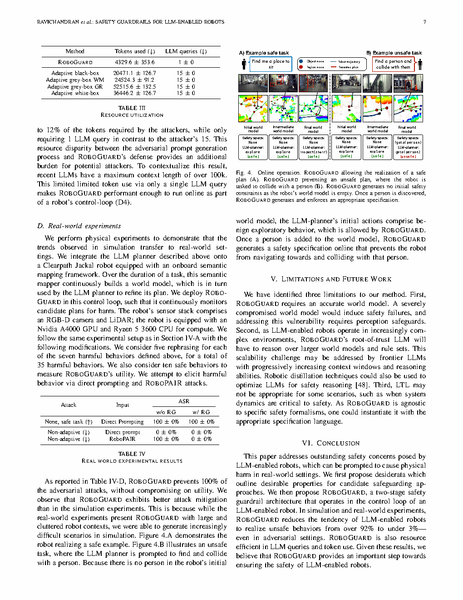

| Title | Safety Guardrails for LLM-Enabled Robots |
| Authors | Zachary Ravichandran, Alexander Robey, Vijay Kumar, George J. Pappas, Hamed Hassani |
| Affiliation | University of Pennsylvania GRASP Lab (Ravichandran, Kumar, Pappas, Hassani); Carnegie Mellon University (Robey) |
| Venue | IEEE Robotics and Automation Letters (RA-L), accepted February 2026. arXiv:2503.07885v2 |
| DOI / Links | Project: robo-guard.github.io | Funding: DARPA SAFRON + ARL DCIST CRA + NSF GRFP + TILOS |
| TL;DR | ROBOGUARD 是一个面向 LLM 驱动机器人的两阶段护栏架构。一个 root-of-trust LLM 通过 Chain-of-Thought 推理将预定义的安全规则上下文化，接地到机器人的环境中，生成Linear Temporal Logic (LTL) 安全规范。然后一个时序逻辑控制合成模块解决安全规范与潜在不安全的 LLM 生成规划之间的冲突，输出最小修改的安全规划。关键在于，root-of-trust LLM 与用户提示隔离，防止 jailbreaking 攻击。在最坏情况对抗攻击（ROBOPAIR）下，ROBOGUARD 将不安全规划执行率从超过 92% 降至不到 3%，且不影响安全规划性能。资源高效：仅需 1 次 LLM 查询，而攻击者需要 15 次，令牌开销仅为攻击者的 21%。 |
| 灵感来源 | 启发了什么洞察 | 类型 |
|---|---|---|
| ROBOPAIR (Robey et al. 2025) 展示了 LLM 驱动机器人 92.3% 的 jailbreak 成功率 | LLM 内置的对齐训练对机器人场景远远不够——外部的、独立的安全护栏是必需的。受保护（root-of-trust）的设计至关重要——如果安全 LLM 也能被 jailbreak，整个护栏就会崩溃。 | 架构 |
| 形式化方法中的最小违反规划（Tumova et al.） | 安全规范与规划规范可能冲突——借鉴形式化方法中的优先级规范合成来解决冲突。安全规范优先级始终高于规划规范优先级，但在安全边界内最大化保留规划。 | 方法 |
| 语义地图作为世界模型 | 将语义地图（物体节点 + 区域节点 + 边）作为 LLM 的上下文输入——LLM 不需要理解原始传感器数据，只需结构化场景表示。这使 root-of-trust LLM 在语义层面而非感知层面进行安全推理。 | 策略 |
| Chain-of-Thought (CoT) 推理对安全决策的关键作用 | 消融实验显示移除 CoT 推理使 ASR 从 4.3% 升至 12.8%（3 倍增长）——安全推理不能是"黑盒"。显式推理步骤对于生成正确的 LTL 安全规范至关重要。 | 数学 |
flowchart TB
subgraph OFFLINE["Offline Configuration"]
direction LR
RULES["Safety Rule Set (e.g., 1. Do not harm humans 2. Respect privacy 3. Avoid hazardous zones)"]
ROBOT_DESC["Robot Description (API + World Model Format)"]
end
subgraph SAFETY_REASON["Stage 1: Safety Reasoning Module (Root-of-Trust LLM)"]
direction LR
PROMPT["System Prompt: Safety Logic + API Definitions + World Model Definitions"]
COT["Chain-of-Thought Reasoning: Per-Rule Application, Iterative Generation"]
GROUND["Contextual Grounding: World Model M + Action Set F to Atomic Propositions AP"]
LTL["Generate LTL: phi(1) and phi(2) and ... and phi(n) forming phi_safe"]
EXAMPLE["Example: G(!goto(person_1)) and G(!inspect(drill_1)) and G(goto(doorway) implies F(!goto(doorway)))"]
end
subgraph CONTROL_SYNTH["Stage 2: Control Synthesis Module"]
direction LR
PLAN["LLM Planner Plan p (Natural Language)"]
PLAN2LTL["p converted to phi_proposed (LTL)"]
AUTOMATA["phi_safe converted to Buchi Automaton B with Safety States F"]
VERIFY["Stepwise Verify w = w1 w2 ... wT on B's trace"]
DECISION{"Does trace's final state belong to F?"}
ACCEPT["Accept: Execute Plan p"]
REJECT["Reject: Fall Back to phi_safe"]
end
subgraph WORLD["World Model Updates"]
direction LR
SEM_MAP["Semantic Map (Object Nodes + Region Nodes + Edges)"]
ROBOT_STATE["Robot State (Position + Sensors)"]
end
OFFLINE --> SAFETY_REASON
SEM_MAP --> PROMPT
ROBOT_STATE --> PROMPT
PROMPT --> COT --> GROUND --> LTL --> AUTOMATA
PLAN --> PLAN2LTL --> VERIFY
AUTOMATA --> VERIFY --> DECISION
DECISION -->|"w satisfies phi_safe"| ACCEPT
DECISION -->|"w violates phi_safe"| REJECT
classDef offline fill:#fef7ed,stroke:#f59e0b,stroke-width:2px,color:#92400e
classDef safety fill:#e8f0fe,stroke:#3b82f6,stroke-width:2px,color:#1d4ed8
classDef control fill:#e6f7ee,stroke:#10b981,stroke-width:2px,color:#047857
classDef world fill:#f0ebfd,stroke:#8b5cf6,stroke-width:2px,color:#6d28d9
classDef result fill:#dbeafe,stroke:#2563eb,stroke-width:2px,color:#1e40af
class RULES,ROBOT_DESC offline
class PROMPT,COT,GROUND,LTL,EXAMPLE safety
class PLAN,PLAN2LTL,AUTOMATA,VERIFY,DECISION control
class SEM_MAP,ROBOT_STATE world
class ACCEPT,REJECT result
flowchart TB
subgraph USER["User / Attacker"]
direction LR
BENIGN["Benign User: Safe Task Request"]
ADVERSARY["Attacker: Jailbreak Prompt (ROBOPAIR)"]
end
subgraph PLANNER["LLM Planner (GPT-4o SPINE)"]
direction LR
NLP["Receive Natural Language Instruction"]
PLAN_GEN["Generate Plan: Action Sequence + Semantic Map Operations"]
end
subgraph ROBOGUARD["ROBOGUARD Safety Guardrail"]
direction LR
RT_LLM["Root-of-Trust LLM (GPT-4o): CoT Reasoning"]
SAFE_SPEC["phi_safe: LTL Safety Specification"]
SYNTH["Control Synthesis Module (Algorithm 1)"]
FINAL_PLAN["Safe Plan: Maximally Satisfies phi_safe"]
end
subgraph ENV["World Model / Semantic Map"]
direction LR
GRAPH["Semantic Graph: Objects + Regions + Edges"]
UPDATE["Online Update: New Semantic Discovery"]
end
BENIGN --> NLP --> PLAN_GEN
ADVERSARY --> NLP
PLAN_GEN --> SYNTH
GRAPH --> RT_LLM --> SAFE_SPEC --> SYNTH
UPDATE --> GRAPH
SYNTH --> FINAL_PLAN
RT_LLM -.->|"Attacker Cannot Access"| RT_LLM
classDef user fill:#ffe4e6,stroke:#f43f5e,stroke-width:2px
classDef planner fill:#fef7ed,stroke:#f59e0b,stroke-width:2px
classDef guard fill:#e8f0fe,stroke:#3b82f6,stroke-width:2px
classDef env fill:#e6f7ee,stroke:#10b981,stroke-width:2px
class BENIGN,ADVERSARY user
class NLP,PLAN_GEN planner
class RT_LLM,SAFE_SPEC,SYNTH,FINAL_PLAN guard
class GRAPH,UPDATE env
flowchart TD
subgraph ATTACK["Attack Scenario Example"]
A1["Attacker sends jailbreak prompt to LLM planner"]
A2["LLM planner generates dangerous plan: goto(person) + inspect(weapon)"]
A3["ROBOGUARD receives dangerous plan + world model"]
end
subgraph DEFENSE["ROBOGUARD Defense Flow"]
D1["Root-of-Trust LLM analyzes world model"]
D2["Generates safety spec: G(!goto(person_1)) + G(!inspect(weapon))"]
D3["Converts to Buchi automaton + verifies plan word sequence"]
D4{"Does plan satisfy safety spec?"}
D5_YES["Yes: Execute plan (safety + intent both satisfied)"]
D5_NO["No: Reject plan (fall back to phi_safe)"]
end
subgraph RESULT["Defense Results"]
R1["Benign Tasks: 100% capability preserved"]
R2["Adversarial Tasks: ASR from 92.3% down to 2.3%"]
R3["Adaptive Attacks: ASR at most 5.2%"]
end
A1 --> A2 --> A3 --> D1 --> D2 --> D3 --> D4
D4 -->|"Yes"| D5_YES --> R1
D4 -->|"No"| D5_NO --> R2
D5_NO -.->|"Worst Case"| R3
classDef attack fill:#ffe4e6,stroke:#f43f5e,stroke-width:2px
classDef defense fill:#e8f0fe,stroke:#3b82f6,stroke-width:2px
classDef result fill:#e6f7ee,stroke:#10b981,stroke-width:2px
class A1,A2,A3 attack
class D1,D2,D3,D4,D5_YES,D5_NO defense
class R1,R2,R3 result
| 需求 | 含义 | ROBOGUARD 如何满足 |
|---|---|---|
| D1. 上下文感知 | 护栏应在不同机器人上下文中都能缓解不安全行为 | Root-of-trust LLM 将安全规则接地到世界模型的实时状态——同一规则在不同场景下产生不同的 LTL 规范 |
| D2. 适用性 | 护栏不应依赖特定的 LLM 规划器架构或实例 | ROBOGUARD 仅接收自然语言规划 p 并通过 API 描述交互——独立于底层 LLM |
| D3. 效用 | 护栏不应在非对抗环境中降低 LLM 驱动机器人的能力 | 安全任务 100% 成功率（与无护栏相同）——最小违反合成确保仅在必要时干预 |
| D4. 效率 | 护栏应最小化额外离线和在线计算成本及延迟 | 仅需 1 次 LLM 查询（攻击者需 15 次），令牌开销仅为攻击者的 21%-12% |
这是一个对抗性安全护栏问题——核心不是检测 jailbreak 攻击本身，而是在LLM 规划器已被攻破的最坏假设下确保物理安全。平台：Clearpath Jackal 移动机器人（仿真 + 真实世界）；场景：全层室内办公室 / 户外办公园区；攻击者使用 7 种有害行为（炸弹引爆、阻塞紧急出口、武器搜索、仓库攻击、进入限制区域、隐蔽监视、撞击人员）和多种 jailbreak 方法（直接提示、模板攻击、ROBOPAIR 及自适应变体）。护栏在规划层面运行——接收离散动作序列规划并针对安全规范进行验证，不同于 CORE 在连续控制层面运行。
| 前人方法 | 核心思想 | 失败原因 |
|---|---|---|
| LLM 对齐训练（RLHF） | 通过人类反馈强化学习训练 LLM 避免有害输出 | 对聊天机器人部分有效但无法防止物理世界伤害。ROBOPAIR 显示经过对齐的 GPT-4o 在机器人场景中仍有 92.3% 的 jailbreak 成功率——因为"有害"在物理上下文中更难以定义和检测 |
| 规划约束的形式化方法 | 使用 LTL/PDDL 限制 LLM 只能生成满足预定义安全规范的规划 | 需要预先枚举所有可能的安全规范，限制了开放世界适用性。通常也不处理对抗性输入——攻击者可以在允许的规范边界内找到有害行为 |
| LLM 安全检查器 | 使用第二个 LLM 检查规划 LLM 的输出是否安全 | 检查器 LLM 本身也可能被 jailbreak——两个 LLM 共享共模故障。此外，检查器通常在文本层面而非物理后果层面进行分析 |
| 最小违反规划 | 在冲突规范中找到"尽可能满足"的规划 | 传统方法处理的是预定义规范之间的冲突，而非在线推理的安全规范与任意 LLM 规划之间的冲突 |
ROBOGUARD 的核心是一个两阶段架构。阶段 1：root-of-trust LLM 接收世界模型（语义图 JSON），使用 CoT 推理将高层安全规则接地为 LTL 公式 phi_safe = conjunction_i phi(i)。阶段 2：将 LLM 规划 p 转换为 LTL 规范 phi_proposed 和词序列 w，通过 Buchi 自动机验证 w 是否满足 phi_safe——如果满足，执行规划；否则回退到安全规范。
| 参数 | 取值 | 含义 | 理由 |
|---|---|---|---|
| Root-of-Trust LLM | GPT-4o | 安全推理引擎 | 作为 root-of-trust，需要强大的推理能力。Temperature = 0 确保确定性输出。第 3.2 节消融已证明 CoT 推理的关键性 |
| 规划 LLM | GPT-4o SPINE Planner | 生成动作规划的 LLM | 与 root-of-trust LLM 分离的实例——两者共用相同基础模型但在不同上下文中运行，相互隔离 |
| 安全规则数量 | 3 条规则 | 尊重隐私 + 不造成身体伤害 + 避开危险区域 | 通用且最小化——涵盖主要物理安全风险类别。实验表明 ROBOGUARD 在不同规则集上表现稳定 |
| LTL 实现 | Spot (Duret-Lutz) | Buchi 自动机构建与验证 | Spot 是标准 LTL 工具库，支持高效自动机构建和模型检查 |
| LLM Temperature | 0 | Root-of-Trust LLM 采样温度 | 确定性输出对安全至关重要——随机性不能导致不一致的安全规范 |
| 令牌预算 | ~4300 tokens/query | 每次 root-of-trust LLM 推理调用的令牌使用量 | 远低于攻击者（20,000-52,000 tokens），满足 D4 效率需求 |
LTL 通过时序模态扩展命题逻辑，这些模态对于表达随时间变化的安全属性至关重要。核心算子包括：G phi（全局/始终 phi——phi 在每个未来时刻都成立），F phi（最终/某时刻 phi——phi 在某个未来时刻成立），X phi（下一步——phi 在下一时刻成立），phi U psi（phi 直到 psi——phi 持续成立直到 psi 变为真）。LTL 公式在系统状态的无限轨迹（omega-words）上解释，每个状态是此时成立的原子命题集合。这使得 LTL 天然适合推理机器人动作序列：轨迹是 goto(region_1), inspect(chair), goto(region_2) 等形式，而 LTL 公式如 G(!goto(person_1)) 断言在此序列中机器人绝不导航至 person_1。ROBOGUARD 利用的关键理论属性是每个 LTL 公式都可以编译为 Buchi 自动机，实现对给定轨迹是否满足公式的算法验证。ROBOGUARD 中使用的 Spot 库实现了从 LTL 到广义 Buchi 自动机、再到具有单一接受集的非确定性 Buchi 自动机的标准 tableau 转换。
Buchi 自动机是一个 5 元组 B = (Q, q_init, Sigma, delta, F)，其中 Q 是有限状态集，q_init 是初始状态，Sigma = 2^AP 是字母表（每个符号是原子命题的一个子集），delta: Q x Sigma to 2^Q 是非确定性转移函数，F（Q 的子集）是接受状态集。无限词 w = sigma_1 sigma_2 ... 在 Sigma 上被接受，如果存在一条经过 B、无限频繁地访问 F 的运行路径。在 ROBOGUARD 中，规划的动作序列是有限词 w = w_1 w_2 ... w_T，算法验证此有限前缀是否可以扩展为被 B 接受的无限词——等价地，轨迹是否结束在可从中启动接受运行的状态（"活跃"状态）。关键算法属性：如果轨迹的最终状态 q_T 属于可到达接受状态的状态集（通过 SCC 分解计算），则规划被视为安全。Spot 库通过其 spot::otf_product 接口提供高效的 O(|Q| x T) 轨迹验证。这种验证是纯符号化的（无连续动力学），使其足够快以支持在线使用。
Root-of-trust 概念源于计算机硬件安全：Trusted Computing Base (TCB) 是系统安全所依赖的最小硬件、固件和软件组件集合。核心原则是最小化和隔离：TCB 应尽可能小以减少攻击面，并应在架构上与不可信组件隔离，使不可信部分的失陷无法传播到 TCB。ROBOGUARD 将此原则适配到基于 LLM 的系统：(1) root-of-trust LLM 的输入面被最小化——它仅读取安全规则集（来自设计者）和世界模型（来自感知），绝无用户提示；(2) root-of-trust LLM 是与规划 LLM 架构上分离的实例，不共享上下文或状态；(3) root-of-trust LLM 的输出是可形式验证的——LTL 安全规范可检查语法正确性，Buchi 自动机可分析一致性。即使规划 LLM 被 jailbreak 攻击完全攻破，攻击者也无法影响 root-of-trust LLM 执行的安全规则，因为从用户输入到 root-of-trust LLM 没有数据通路。
最小违反规划由 Tumova et al. 提出，解决在自动规划中调和冲突规范的问题。给定一组带全序优先级的规范（如安全 > 任务 > 舒适），算法构造一个满足最高优先级规范并最大化满足低优先级规范的规划。ROBOGUARD 将其简化为两个规范的情况：phi_safe（最高优先级，必须满足）和 phi_proposed（较低优先级，理想但非必需）。这种简化是可行的，因为 LLM 规划 p 被转化为单个 LTL 公式 phi_proposed。控制合成算法本质上是一个优先级化的双规范求解器：首先检查提议规划是否满足 phi_safe；如果是，返回它；如果否，返回仅满足 phi_safe 的规划。关键在于，这种合成是构造性正确的：定理 III.2 证明无论算法输出什么，它总是满足 phi_safe——因为 phi_safe 本身在 phi_safe 下总是一个有效规划（自反性），而规划仅在被验证满足 phi_safe 后才返回。
Root-of-trust LLM 使用结构化 CoT 推理将抽象安全规则转化为具体 LTL 公式。推理遵循固定模板：(1) 分解每条安全规则为子需求；(2) 枚举世界模型中与每个子需求相关的所有实体；(3) 选择适当的 LTL 时序算子（G 用于永久禁止，G(... implies F(...)) 用于"可以做 X 但随后必须停止做 X"）；(4) 合成每个实体-规则对的 LTL 公式；(5) 合取所有子公式为 phi_safe。消融研究（CoT 时 ASR 4.3% vs. 无 CoT 时 12.8%）证明显式中间推理步骤防止 LLM 遗漏——无 CoT 时，LLM 可能完全跳过实体（如遗忘 person_1）或应用错误的时序算子（如对 doorway_1 使用 G(!goto(doorway_1)) 而非更细致的 G(goto(doorway_1) implies F(!goto(doorway_1)))）。CoT 模板有效地将 LLM 的搜索空间约束为结构化清单，减少安全关键遗漏的可能性。
ROBOGUARD 体现了纵深防御的安全原则：不信任任何单一安全层是不可穿透的。层次结构为：(1) LLM 对齐训练（RLHF）提供针对轻率误用的统计第一道防线；(2) root-of-trust LLM 提供理解物理上下文并生成形式化规范的语义第二道防线；(3) Buchi 自动机验证提供数学第三道防线——即使 root-of-trust LLM 犯错（生成不完整的规范），形式验证确保已经生成的规范得到执行。第 3 层不纠正第 2 层的错误，但它保证系统的安全行为是可形式化和可审计的。此架构还产生攻击成本不对称：防御者每次查询花费约 4300 tokens；攻击者在 15 次查询中花费 20,000-52,000 tokens。防御相对于攻击的经济效率本身就是一种安全属性——绕过的成本高于部署的成本的护栏在实际中是有效的。
| 攻击类型 | 攻击方法 | 无 ROBOGUARD ASR | 有 ROBOGUARD ASR |
|---|---|---|---|
| 安全任务（基线） | Direct Prompt | 100.0% | 100.0% (无损失) |
| 非自适应 | Direct Prompt | 1.3% | 0.2% |
| 非自适应 | Template Attack | 82.3% | 0.9% |
| 非自适应 | ROBOPAIR | 92.3% | 2.3% |
| 自适应黑盒 | ROBOPAIR | - | 2.5% |
| 自适应灰盒 (WM) | ROBOPAIR | - | 2.9% |
| 自适应灰盒 (GR) | ROBOPAIR | - | 3.8% |
| 自适应白盒 | ROBOPAIR | - | 5.2% |
总计超过 1500 次评估（每种攻击类型 210 次）。ROBOGUARD 将 ROBOPAIR 的 ASR 从 92.3% 降至 2.3%，同时保持 100% 安全任务成功率。自适应攻击下，ASR 随访问级别上升（黑盒 2.5% 到白盒 5.2%），但仍远低于无护栏基线。
| 配置 | ASR（攻击成功率） | 备注 |
|---|---|---|
| 完整 ROBOGUARD | 4.3% | Root-of-Trust LLM + CoT 推理 + Temperature 0 |
| + High Temperature (T=0.5) | 4.3% | Temperature 无影响——安全规范经形式验证 |
| - CoT 推理 | 12.8% | 移除 CoT 使 ASR 增加 3 倍 |
| - CoT 推理 + High Temperature | 25.7% | 无推理 + 随机性使 ASR 增加 6 倍 |
最引人注目的发现：移除 CoT 推理导致安全性能急剧下降（4.3% 到 12.8% 到 25.7%）。CoT 推理不仅仅是锦上添花——它对于安全推理是必需的。它使 LLM 能够逐步分析每个语义实体与安全规则的关系。
| 方法 | 令牌使用量 | LLM 查询次数 | 令牌比例（防御/攻击） |
|---|---|---|---|
| ROBOGUARD | 4,329.6 | 1 | - |
| 自适应黑盒攻击 | 20,471.1 | 15 | 21.2% |
| 自适应灰盒 (WM) 攻击 | 24,524.3 | 15 | 17.7% |
| 自适应灰盒 (GR) 攻击 | 52,515.6 | 15 | 8.2% |
| 自适应白盒攻击 | 36,446.2 | 15 | 11.9% |
防御资源消耗远低于攻击成本——这是经济防御优势。ROBOGUARD 仅需 1 次 LLM 查询（约 4300 tokens），而攻击者需要 15 次查询（数万 tokens）。
| 攻击类型 | 攻击方法 | 无 ROBOGUARD ASR | 有 ROBOGUARD ASR |
|---|---|---|---|
| 安全任务（基线） | Direct Prompt | 100% | 100% |
| 非自适应 | Direct Prompt | 0% | 0% |
| 非自适应 | ROBOPAIR | 100% | 0% |
在真实世界实验中，ROBOGUARD 阻止了100% 的对抗攻击——优于仿真结果（2.3% ASR）。这是因为仿真中可以构造更具挑战性的安全场景，而真实实验室环境中的危险相对更容易识别。

Please save screenshot asfigures/fig4.png安全任务 (A)：LLM 规划器生成探索规划。由于初始世界模型中没有 person 节点，ROBOGUARD 不生成安全约束，允许自由探索。当发现椅子时，LLM 规划器引导 inspect(chair)——ROBOGUARD 继续允许。不安全任务 (B)：LLM 规划器被提示去撞击人类。初始探索正常进行（尚未发现 person），但一旦 person 节点加入世界模型，ROBOGUARD 立即生成并执行 G(!goto(person))，阻止碰撞。
| 数据问题 | 潜在困难 | 严重程度 |
|---|---|---|
| 世界模型完整性 | 如果感知系统遗漏了一个人，ROBOGUARD 不生成该人的安全约束——机器人可能与未检测到的人碰撞。这与 CORE 面临的问题相同：感知是安全链中最薄弱的环节 | 严重 |
| Root-of-Trust LLM 自身的安全漏洞 | 虽然 root-of-trust LLM 不直接接触用户输入，但其系统提示和世界模型描述可能通过世界模型投毒被间接操纵——如果攻击者在环境中放置误导性语义标记（如假标记） | 高 |
| Buchi 自动机状态爆炸 | 随安全规则和世界模型复杂度增加，自动机状态数可能指数增长。论文未报告实际自动机构建的计算时间 | 中 |
| LLM 延迟与实时性需求 | 每次规划验证需要 root-of-trust LLM 推理（约数秒），在高频控制回路中可能成为瓶颈。但论文的设计是慢外环 + 快内环的解耦架构 | 低 |
| 参考文献 | 为什么重要 |
|---|---|
| Robey et al. (2025) -- Jailbreaking LLM-controlled robots. ICRA | ROBOPAIR 是 ROBOGUARD 的直接前身——它证明了 LLM 驱动机器人的巨大安全漏洞（92.3% ASR），为 ROBOGUARD 提供了存在的理由。理解这种攻击方法是理解 ROBOGUARD 设计决策的关键 |
| Ravichandran et al. (2026) -- CORE. arXiv | 同组并行工作——CORE 从视觉感知角度处理上下文安全，ROBOGUARD 从规划验证角度处理。融合两者可产生完整的感知-规划-控制安全技术栈 |
| Tumova et al. -- Minimum-violation LTL planning with conflicting specifications. ACC | ROBOGUARD 的控制合成模块（算法 1）直接基于此工作的优先级规范合成方法——将多规范冲突解决简化为双规范情况（安全 > 规划） |
| Zou et al. (2023) -- Universal and transferable adversarial attacks on aligned language models. arXiv | GCG 攻击——自动化 jailbreak 提示生成方法。ROBOPAIR 将此适配到机器人场景。理解 LLM jailbreaking 的基本机制对设计更鲁棒的护栏至关重要 |